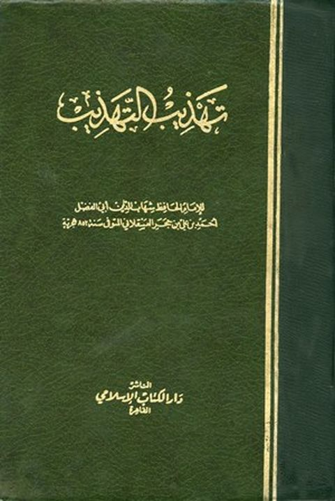

تهذيب التهذيب- ط الكتاب الإسلامي
Authors: أحمد بن علي بن حجر العسقلاني
Publishers: دار الكتاب الإسلامي
Download Downloads need an internet connection.
- Country
- القاهرة، مصر
- Edition
- 1
- Volumes
- 15
- Pages
- 4641
- Type
- كتاب
- Category
- التراجم والأعلام
Description
**▫️ العنوان: تهذيب التهذيب- ط الكتاب الإسلامي** ▪️ المؤلف: #أحمد_بن_محمد_بن_علي_بن_حجر_العسقلاني ▫️ الناشر: #دار_الكتاب_الإسلامي ▪️ بلد النشر: القاهرة، #مصر ▫️ الطبعة: 1 ▪️ عدد الأجزاء: 15 ▫️ الصفحات: 4641 ▪️ نوع الوعاء: #كتاب ▫️ التصنيف الرئيسي: #التراجم_والأعلام ۪